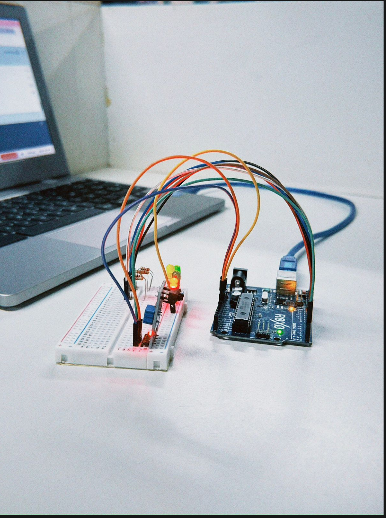
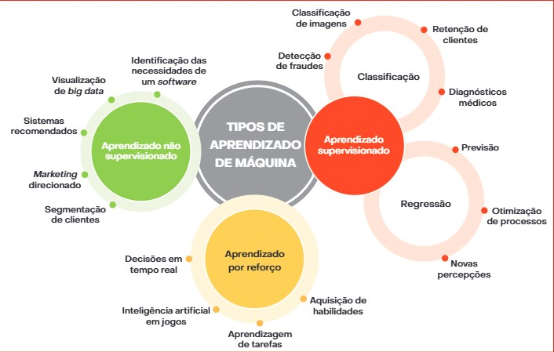

Componentes utilizados
Arduino
Servomotores
Jumpers (MxM, MxF, FxF)
Resistores
LEDs
Sensor ultrassônico
Sensor IR
Acelerômetro e giroscópio
Protoboard
Diário de robótica do 2°D
Membros:
Leonardo Rodrigues nº19
Maria Julia nº
Julia nº
Isadora nº
Samuel nº
Arduino
Servomotores
Jumpers (MxM, MxF, FxF)
Resistores
LEDs
Sensor ultrassônico
Sensor IR
Acelerômetro e giroscópio
Protoboard
Arduino é uma plataforma que permite programar e controlar circuitos eletrônicos.
Principais conexões:
escrever e colocar imagens do projeto.
Projeto do semaforo com infravermelho:

Mapa mental sobre aprendizado de máquina:
